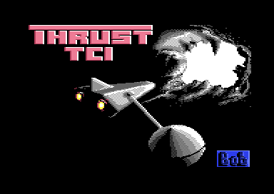
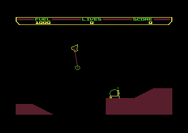
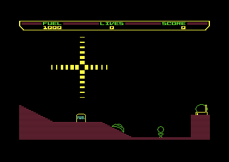
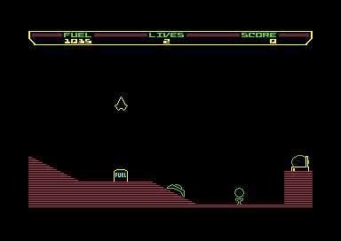
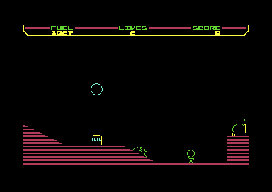
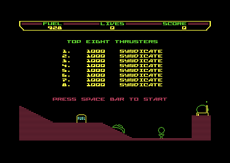

<meta charset="utf-8">
<meta name="viewport" content="width=device-width, initial-scale=1">
<title>{{title}}</title>
<link rel="preconnect" href="https://fonts.googleapis.com">
<link rel="stylesheet" href="https://fonts.googleapis.com/css2?family=Lato:wght@400;700;900&family=IBM+Plex+Mono:wght@400;500&display=swap">
<style>
:root{
  --bg:#23262d; --paper:#e9e7e1; --surface:#ffffff; --surface-2:#f1efea; --line:#d5d3cc; --line-soft:#e0ded8;
  --ink:#2f3136; --ink-soft:#55585f; --ink-mute:#80838a;
  --link:#1f5fa8; --link-hover:#154480; --accent:#1f5fa8;
  --amber:#c25a00; --cyan:#1f5fa8; --coral:#d04a3a; --green:#2a8a4a; --violet:#4a5bd6; --hl:#fff0c2;
  --chip:#2f3136; --chip-ink:#ffffff;
  --c64blue:#40318d; --c64grey:#686868;
  --fd:'Lato',system-ui,sans-serif; --fb:'Lato',system-ui,sans-serif; --fm:'IBM Plex Mono',ui-monospace,Menlo,monospace;
  --col:1080px; --gx:68px; --fs:17px; --lh:1.6; --hw:900; --h1:46px; --h2:26px; --sy:48px; --pp:26px; --r:10px;
  --plate-shadow:0 1px 2px rgba(0,0,0,.05),0 4px 14px rgba(0,0,0,.05);
}
*{box-sizing:border-box}
html{background:var(--bg);min-height:100%}
body{background:var(--paper);color:var(--ink);font-family:var(--fb);font-size:var(--fs);line-height:var(--lh);max-width:var(--col);margin:0 auto;min-height:100vh;padding:0 0 4rem}
h1,h2,h3{font-weight:var(--hw);letter-spacing:-.01em;text-wrap:balance;color:var(--ink);margin:0}
.wrap{padding:0 var(--gx)}
.hero{padding:48px var(--gx) 8px;text-align:left}
.eyebrow{font-family:var(--fm);font-size:12px;letter-spacing:.08em;text-transform:uppercase;color:var(--ink-mute);margin:0 0 10px}
.hero h1{font-size:var(--h1);line-height:1.15;letter-spacing:-.02em;margin:0 0 14px}
.hero .sub{margin:0 0 .6em;color:var(--ink-soft)}
section{padding:var(--sy) 0 24px}
section:last-of-type{border-bottom:none}
.fig{font-family:var(--fm);font-size:12px;letter-spacing:.08em;text-transform:uppercase;color:var(--ink-mute);margin:0 0 10px}
h2.t{font-size:var(--h2);margin-bottom:12px}
.lede{color:var(--ink-soft);margin:0 0 30px}
.plate{background:var(--surface);border:1px solid var(--line);border-radius:var(--r);padding:var(--pp);box-shadow:var(--plate-shadow)}
.cap{font-size:14px;color:var(--ink-mute);margin-top:14px;line-height:1.55}
.cap b{color:var(--ink);font-weight:700}
code{font-family:var(--fm);font-size:.82em;background:var(--chip);color:var(--chip-ink);border-radius:4px;padding:2px 6px;white-space:nowrap}

</style>
<!--
  Template for a game article. Keep it self-contained: inline CSS and JS,
  fonts are the only external resource, opens from disk. The section below
  shows the parts a section is made of, not which section comes first: the
  kinds of section are listed in kit/skills/core/70-minisite, in no order,
  and this page's order is its own. The best thing to press or hear goes
  as high as the explanation lets it, and every section should have
  something the reader can press. Copy follows kit/style.md and is written
  last.
-->
<!-- tabs -->
<header class="hero">
  <p class="eyebrow">Commodore 64 · 1986 · Firebird</p>
  <h1>Thrust</h1>
  <p class="sub">Jeremy C. Smith's cave flyer, in which a ship tows a heavy pod on a rod against gravity, sold on the C64 by Firebird's budget label. The C64 program still carries the BBC Micro version's page of keys, teletext codes and all.</p>
</header>
<main class="wrap">
<section>
  <p class="fig">01 · Controls</p>
  <h2 class="t">Secret: the C64 copy keeps the BBC Micro's key page</h2>
  <p>On the C64 the ship is flown from the keyboard. A and S turn it through 32 directions, either Shift key thrusts, Return fires, and Space raises the shield, which is also the tractor beam. F5 pauses until F7 is pressed, and F1 and F3 turn the sound off and on.</p>
  <p>The game reads the whole keyboard matrix once into eight bytes <code>$9DE2</code>, then asks about one key at a time by its number in the matrix, row times eight plus column <code>$B476</code>. The five controls sit together in a table of key numbers <code>$B4BC</code>.</p>
  <p>Next to the game's own messages sits a page of text that starts with 22,7, the BBC Micro's command for its teletext mode, and uses teletext colour and double-height codes <code>$B9DD</code>. The page names the BBC keys: CAPS LOCK and CTRL to rotate, COPY and DELETE to freeze, ESCAPE to quit. A routine prints the page through the C64's own character output and waits for Space <code>$B74B</code>, but nothing in the code traced so far calls it. The crackers added a line at the bottom: "Cracked By The Syndicate For TCI !".</p>
</section>
<section>
  <p class="fig">02 · Loading</p>
  <h2 class="t">Two unpackers before the first instruction</h2>
  <p>This copy is a crack: one packed file, with the title picture shown while it waits for fire on joystick port 1. A second unpacker then rebuilds the game, a short routine moves 61 pages of it up to $8280, and the game's own code starts at $B675 <code>$B675</code>. Its first job is to copy three pages of start-up code to $0400 and run them there <code>$B70B</code>, which is why that code sits at $B773 in memory but is written for $0400 <code>$B773</code>.</p>
  <p>Once running, the game has one interrupt handler <code>$8943</code>. It splits the screen by working down a list of raster lines, each naming one of five handlers <code>$8964</code>, so the status bar at the top and the cave below get their own settings.</p>
</section>
<section>
  <p class="fig">03 · Screens</p>
  <h2 class="t">From the title to the first planet</h2>
  <div class="plate"><p class="cap"><b>Title.</b> The loading picture, signed "Bob". This crack adds "TCI" under the name.</p></div>
  <div class="plate" style="margin-top:20px"><p class="cap"><b>Attract mode.</b> A demo pilot flies level 1 and carries the pod away. Space starts a game.</p></div>
  <div class="plate" style="margin-top:20px"><p class="cap"><b>Arrival.</b> Each ship appears out of a yellow cross.</p></div>
  <div class="plate" style="margin-top:20px"><p class="cap"><b>Level 1.</b> The fuel tank, a gun, the pod on its stand, and the reactor on the right. Fuel, lives in reserve, and score run along the top.</p></div>
  <div class="plate" style="margin-top:20px"><p class="cap"><b>Shield.</b> Space turns the ship into a green circle and burns fuel faster than thrust.</p></div>
  <div class="plate" style="margin-top:20px"><p class="cap"><b>High scores.</b> The table between games. In this copy every entry reads SYNDICATE.</p></div>
</section>
</main>
<footer style="margin:16px 0 0;padding:22px var(--gx) 0;border-top:1px solid #e0ded8;font-family:'IBM Plex Mono',ui-monospace,Menlo,monospace;font-size:12px;color:#80838a"><a href="https://github.com/gamesexplained/gamesexplained" style="color:#1f5fa8;text-decoration:none">GitHub</a> · <a href="https://discord.gg/3V9GWyRDWV" style="color:#1f5fa8;text-decoration:none">Discord</a><br>© Games Explained contributors. Write-ups, facts and symbol maps are available under <a href="https://creativecommons.org/licenses/by-sa/4.0/" style="color:#1f5fa8;text-decoration:none">CC BY-SA 4.0</a>; code under <a href="https://opensource.org/licenses/MIT" style="color:#1f5fa8;text-decoration:none">MIT</a></footer>
